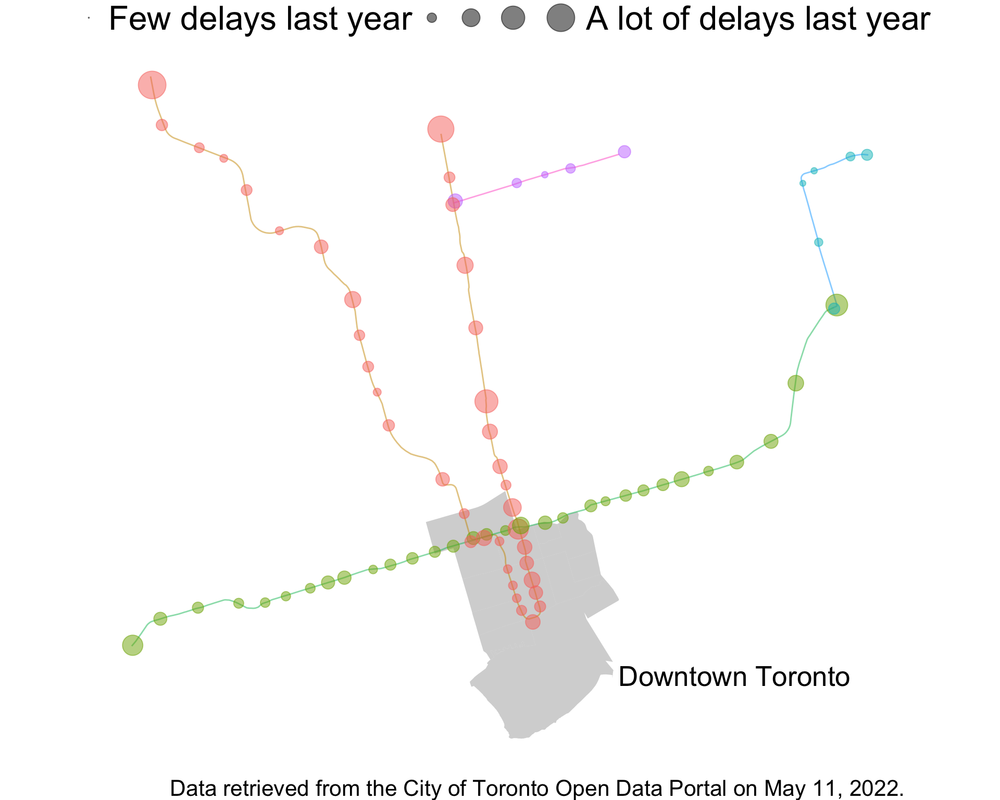
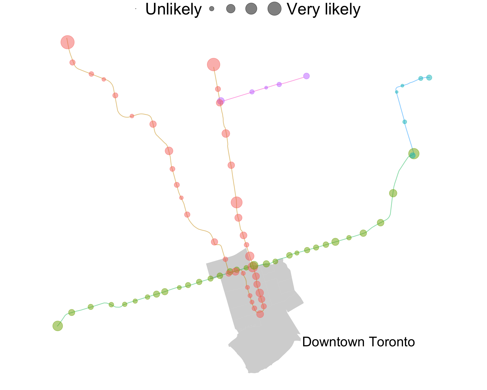
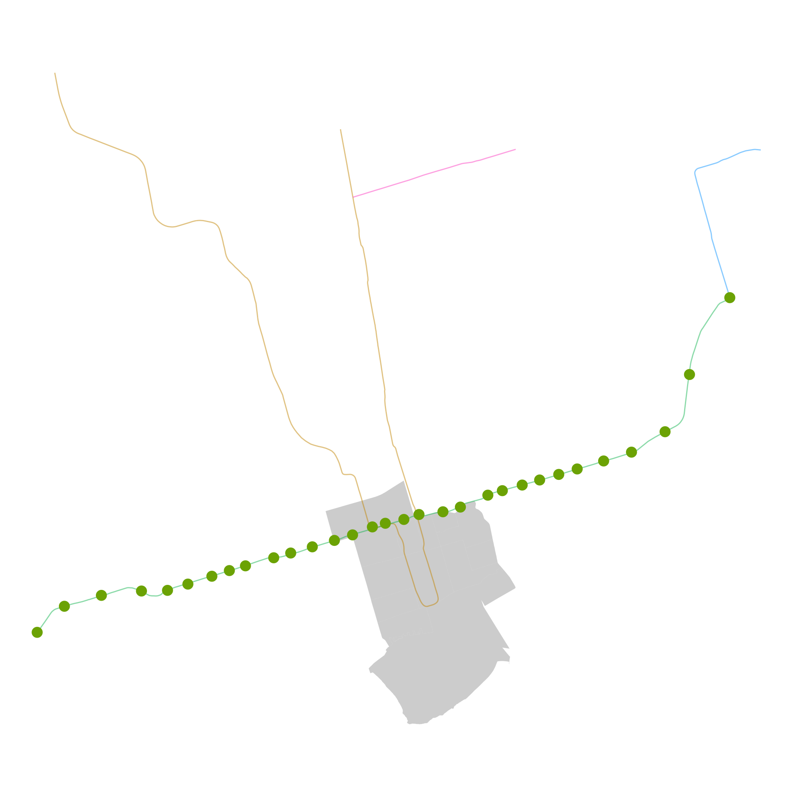
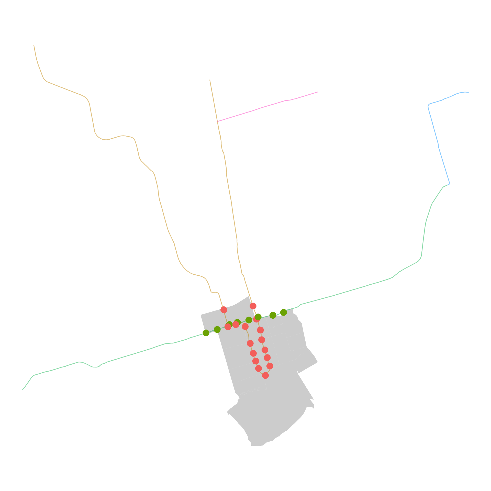
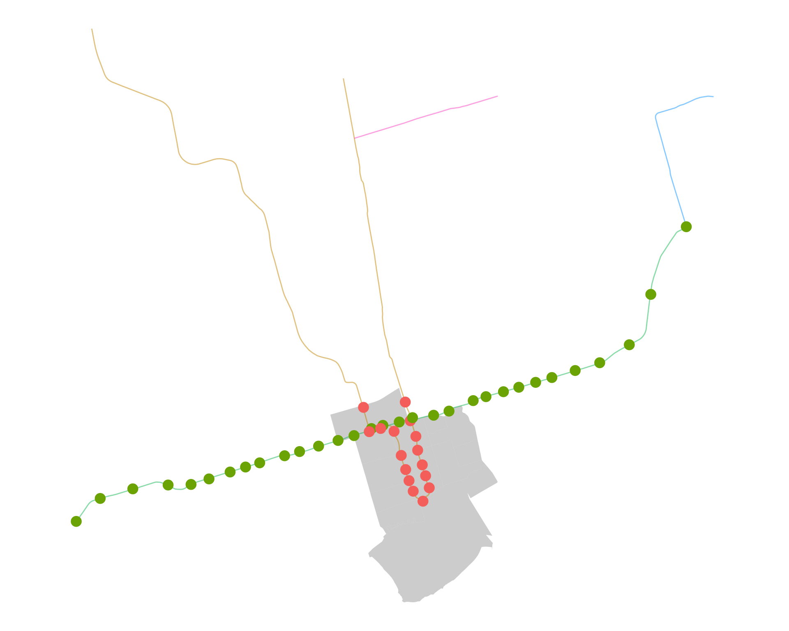
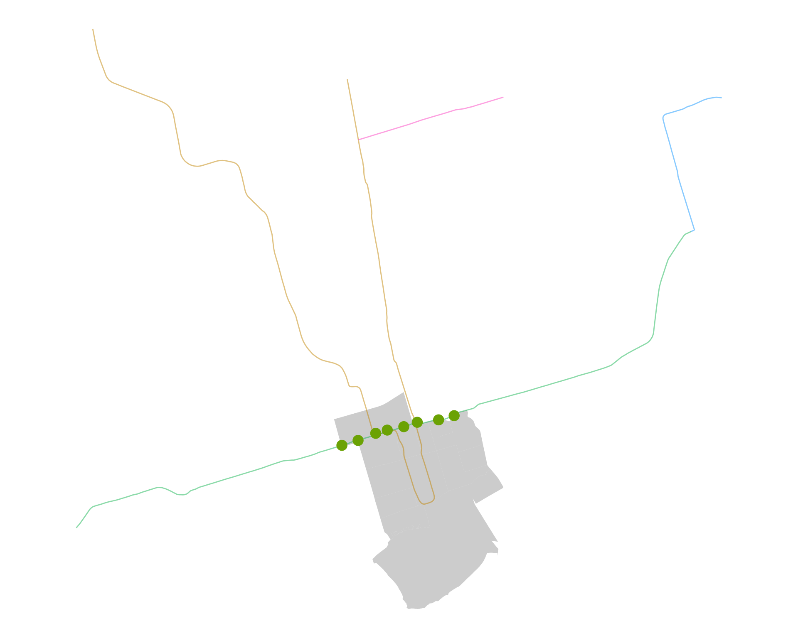
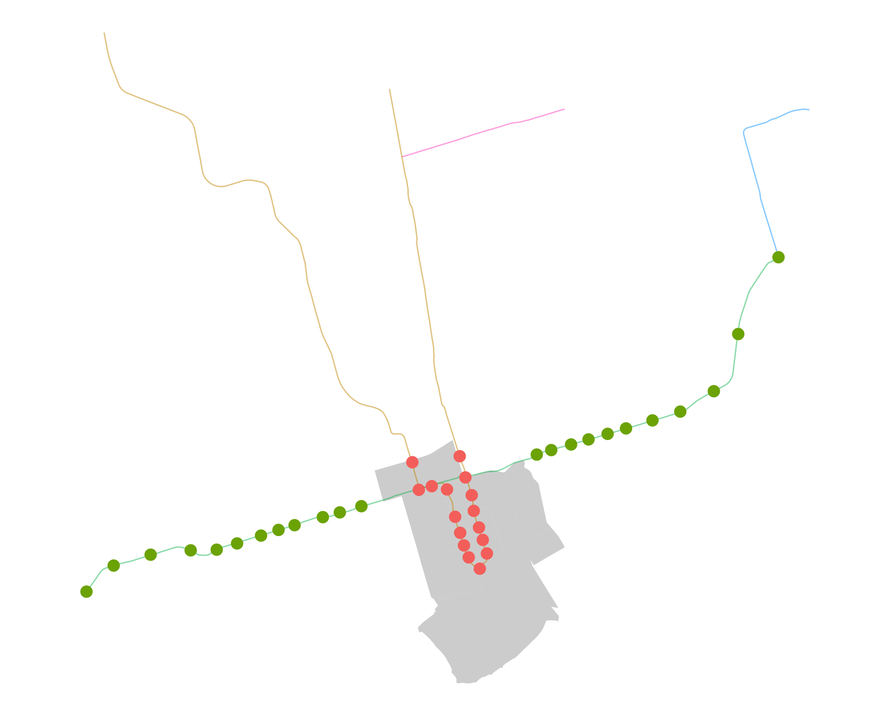

Lecture 1: Outcomes, Events, and Probability
STA237: Probability, Statistics, and Data Analysis I
Michael Jongho Moon
PhD Student, DoSS, University of Toronto
May 9, 2022
Introduction to probability
At which station will there be the next subway delay?
- Definitely Finch.
- Probably Spadina..
- Maybe Queen’s Park…
- None of them. TTC is perfect.
In plain language, definitely, probably, and maybe express a degree of uncertainty or a degree of belief.
What probability is
A discipline
Probability is the science of uncertainty.
(Evans and Rosenthal)
An expression
a number between 0 and 1 that expresses hows likely [an] event is to occur…
(Dekking et al.)
Another way of thinking about probability is in terms of relative frequency.
(Evans and Rosenthal)
Example

- Past frequency of delays at each stop provides a hint where the next delay may occur
- You woud assign a high probability to a station with a relatively high frequency
Why we study probability
Probability is everywhere and understanding probability can help you…
- plan your next subway trip
- forget about the Lotto Max ticket you threw away by accident
- understand that launching the space shuttle Challenger was a bad idea without launching it (Section 1.4 of Dekking et al.)
Random experiment, outcomes and events
Definitions

A (random) experiment is a mechanism/phenomenon that results in random or unpredictable outcomes.
The station where you experience your next TTC subway delay is the outcome.
A sample space is the collection of all possible outcomes from an experiment. It’s often denoted \(\Omega\) (Omega).
\[\Omega=\{\text{St Goerge}, \text{Spadina}, \cdots\}\] \[=\text{All stations}\]
An event is a subset of the sample space.
Some basic set theory
Events
Consider the following events.
\(A\): Your next delay is along Bloor-Danforth line.
\(B\): Your next delay is in downtown Toronto.



Union
\[A\cup B\]
A
B
- Represents the event that includes outcomes from event \(A\) or \(B\)
- That is, a delay along Bloor-Danforth line or in downtown

Intersection
\[A\cap B\]
A
B
- Represents the event that includes outcomes from event \(A\) and \(B\)
- That is, a delay along Bloor-Danforth line (and) in downtown

Complement
\[A^c\]
A
B
- Represents the event that excludes outcomes from A
- A delay that is NOT along Bloor-Danforth line
Example: Niether \(A\) nor \(B\)
How would you write an event that includes outcomes that belong to neither \(A\) nor \(B\) using set notation?
We could write…
a delay that is
NOT \((\cdot^c)\)
along Bloor-Danforth line \((A)\)
OR \((\cup)\)
in downtown \((B)\).
a delay that is
NOT \((\cdot^c)\) along Bloor-Danforth line \((A)\)
AND \((\cap)\)
NOT \((\cdot^c)\) in downtown \((B)\).
\[(A\cup B)^c\]
\[=\]
\[A^c \cap B^c\]
De Morgan’s Laws
For any two events \(A\) and \(B\), we have
\[(A\cup B)^c = A^c \cap B^c\]
A
B
and
\[(A\cap B)^c = A^c\cup B^c.\]
A
B

Example: Exactly one of \(A\) or \(B\)
An event that includes outcomes that belong to exactly one of \(A\) or \(B\), but not both.
A
B
\[A\cup B \cap (A \cap B)^c\]
or
\[A\cup B \cap (A^c \cup B^c)\]
Other useful notations
Disjoint \(A\) and \(B\)
(mutually exclusive)
A
B
\[A\cap B=\{\}=\emptyset\]
\(A\) implies \(B\)
\(A\) is a subset of \(B\)
A
B
\[A\cap B=A\]
\[A\subset B\]
Probability
Probability function
A probability function \(P\) defined on a finite sample space \(\Omega\) assigns each event \(A\) in \(\Omega\) a number \(P(A)\) such that
- \(0\le P(A) \le 1\);
- \(P(\Omega) = 1\); and
- \(P(A\cup B) = P(A) + P(B)\)
if \(A\) and \(B\) are disjoint.
The number \(P(A)\) is called the probability that \(A\) occurs.
A probability function \(P\) defined on an infinite sample space \(\Omega\) assigns each event \(A\) in \(\Omega\) a number \(P(A)\) such that
- \(0\le P(A) \le 1\);
- \(P(\Omega) = 1\); and
- \(P(A_1\cup A_2 \cup A_3 \cup \cdots) = P(A_1) + P(A_2) + P(A_3) + \cdots\)
if \(A_1\), \(A_2\), \(A_3\), … are disjoint.
The number \(P(A)\) is called the probability that \(A\) occurs.
Probability and set operations
Probability of a union
A
B
\[A\]
A
B
A
B
\[(A\cap B^c)\cup (A\cap B)\]
For any two events \(A\) and \(B\), we can decompose each into two disjoint subsets.
\[\implies P(A)=P(A\cap B^c) + P(A\cap B)\]
Probability of a union
A
B
\[A\cup B\]
\[=(A\cap B^c)\cup (A\cap B)\cup (A^c\cap B)\]
A
B
A
B
A
B
\[\implies P(A\cup B)=P(A\cap B^c) + P(A\cap B) + P(A^c \cap B)\]
Probability of a complement
\[\Omega\]
A
A
\[A\cup A^c\]
For any event \(A\), we can decompose the sample space \(\Omega\) into two disjoint subsets.
\[\implies P(\Omega)=P(A) + P(A^c)\]
\[\implies P(A^c)=1-P(A)\]
Calculating probability by counting
Applies only when
- all outcomes of the sample space are equally likely; and
- \(\Omega\) is finite.
For any event \(A\) of such sample space \(\Omega\),
\[P(A)=\frac{\text{number of outcomes that belong to }A}{\text{total number of outcomes in }\Omega}\]
Example: Rolling a die
Suppose you roll a fair die once.
\[A=\text{You roll an even number.}\] \[B=\text{You roll a number less than 3.}\]
Compute the following probabilities.
\[P(A)\]
\[P(A\cap B)\]
\[P(A\cup B)\]
Multiple experiments
Example: Rolling a die twice
Suppose you roll the die twice .
Let \(\Omega_1\) be the sample space for the first roll and \(\Omega_2\) the sample space for the second.
We will denote the sample space of rolling the die twice with \(\Omega\).
What is \(\Omega\)?
Product of sample space
In general,
\[\Omega=\Omega_1 \times \Omega_2=\left\{\left(\omega_1, \omega_2\right):\omega_1\in \Omega_1, \omega_2\in\Omega_2\right\}\]
That is, the sample space generated by observing multiple experiments is a product of the individual sample spaces consisting of all combinations of outcomes of individual experiments.
Example: Rolling a die twice
Compute \(P\left(\left\{\left(1,6\right)\right\}\right)\).
Practice questions
- Exercises from Dekking et al. Chapter 2: 2.1, 2.2, 2.6, 2.7, 2.9-2.19
Simulation in R worksheet
- Follow this link to open the worksheet
© 2022. Michael J. Moon. University of Toronto.
Sharing, posting, selling, or using this material outside of your personal use in this course is NOT permitted under any circumstances.